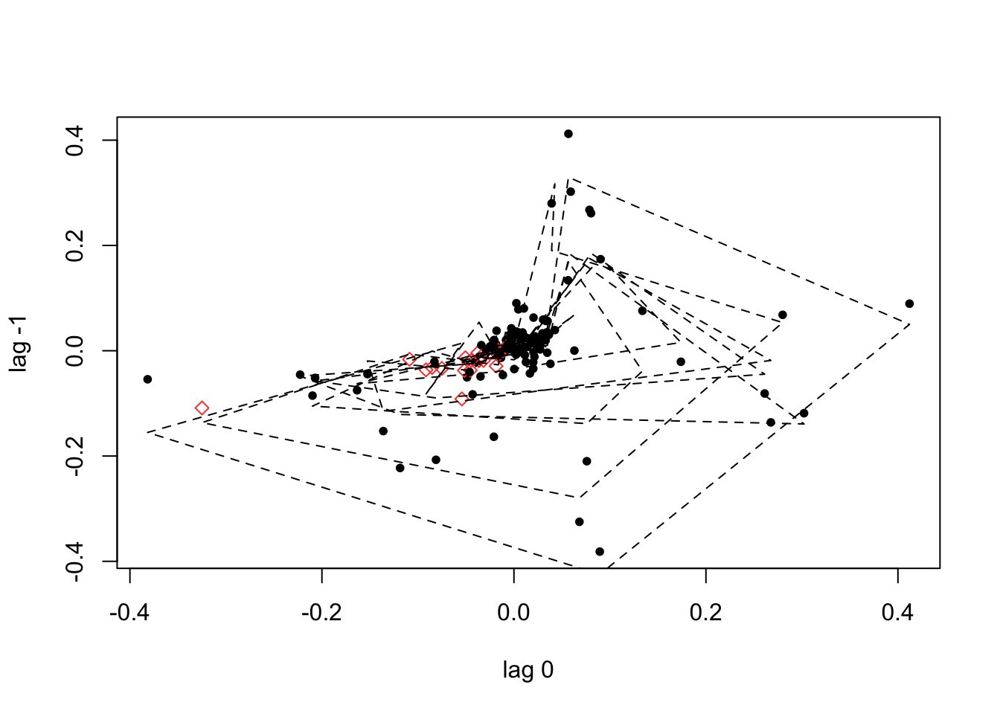
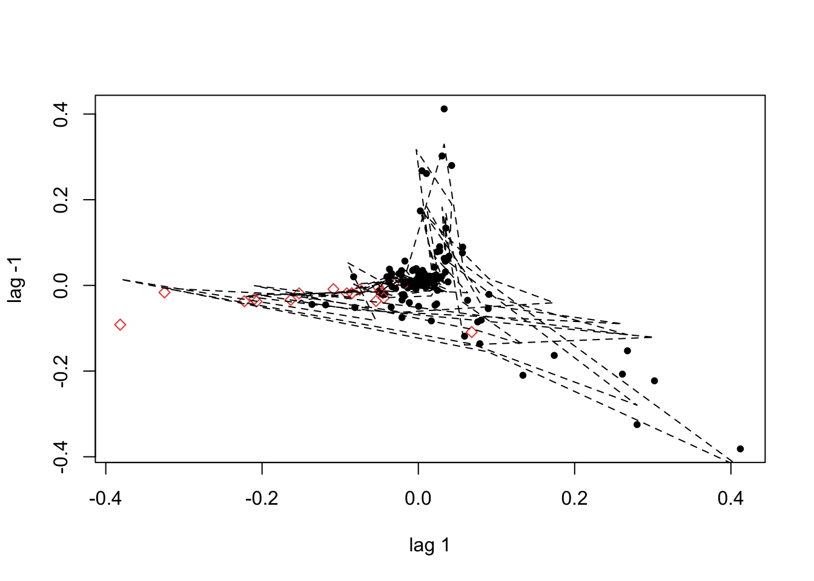
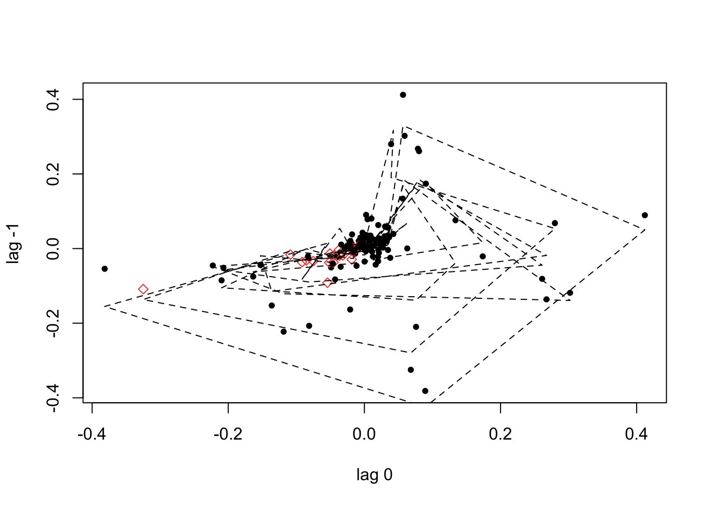
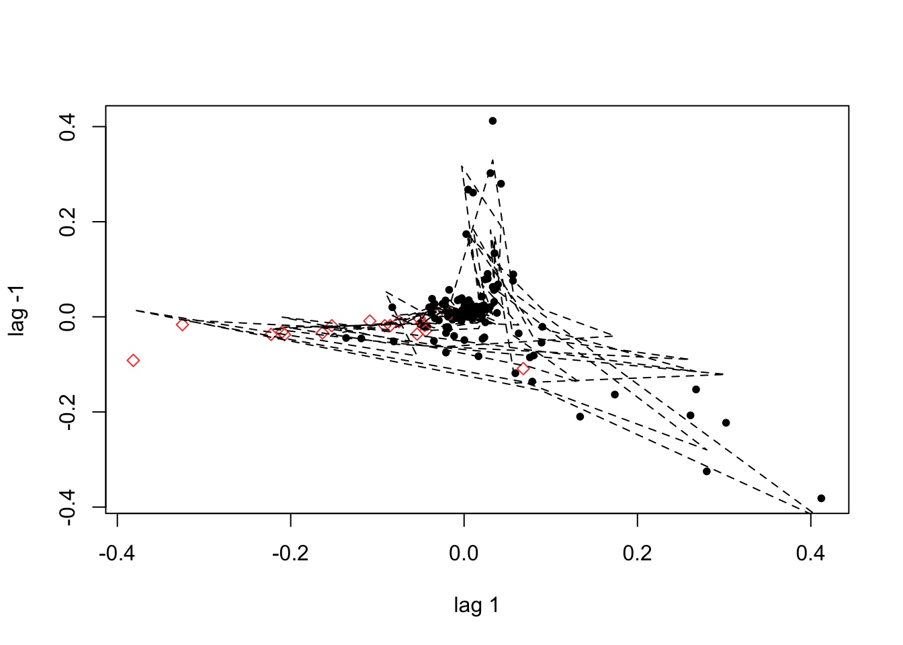
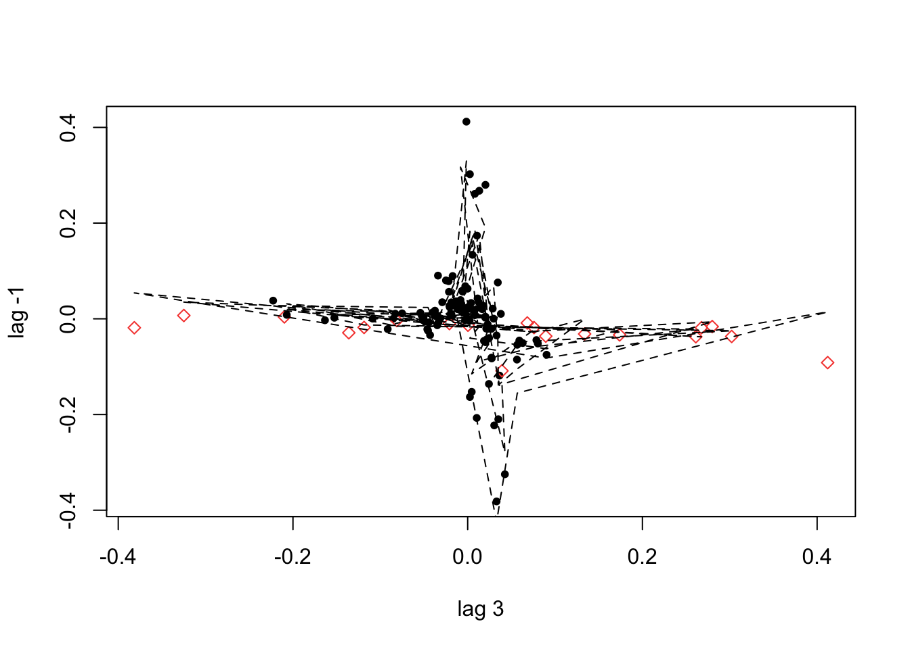
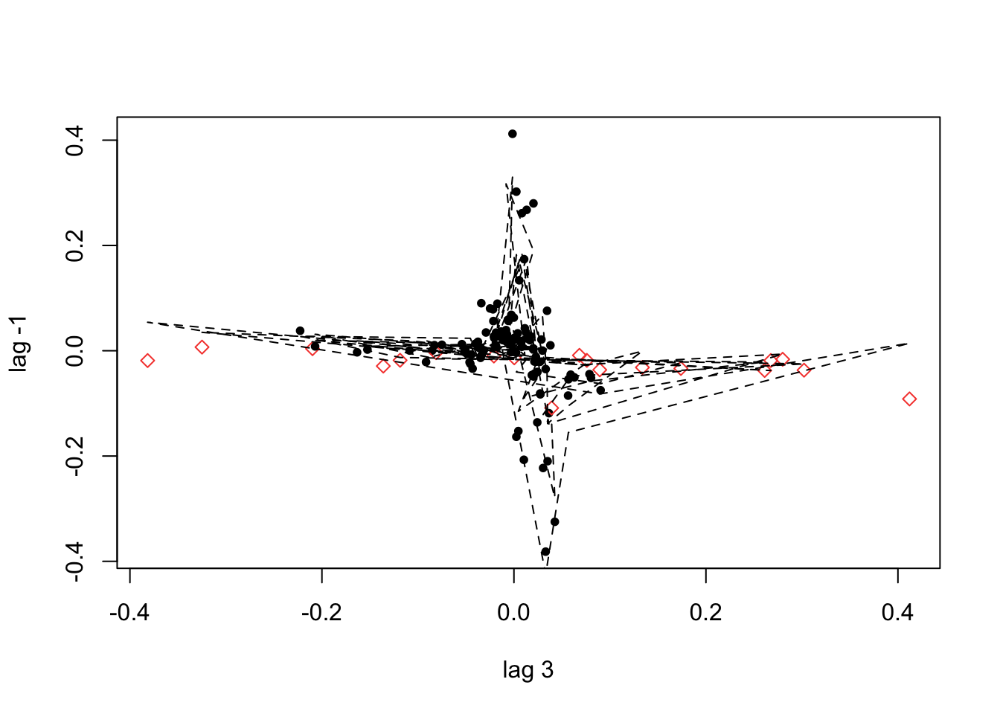

12 Otros Modelos de Series de Tiempo No lineales
12.1 Modelos de cambio de régimen
En años recientes, los modelos de serie de tiempo han sido incorporados en análisis de la existencia de diferentes estados que son generados por procesos estocásticos subyacentes. En esta sección del curso revisaremos algunos modelos de cambio de regimen. Restringimos nuestra revisión a modelos que asuman que la dinámica de las series puede ser descrito por modelos del tipo AR y dejamos fuera procesos del tipo MA.
En general distinguimos que existen dos tipos de modelos:12.1.1 Regímenes determinados por información observable
En estos casos asumimos que el régimen ocurren en un momento \(t\) y puede ser determinado por una variable observable. Este modelo es conocido como el modelo autoregresivo con umbral (TAR, Threshold Autoregressive model). En este caso también diremos que cuando el régimen está determinado por la información de la misma serie será llamdao Self-Exciting TAR (SETAR).
Veámos un ejemplo. Supongamos que existe un umbral, \(c\), para el régimen que esta determinado por \(q_t = y_{t-1}\) y que el estado de la naturaleza nos permite establecer dos estados o regímenes: \[\begin{equation} y_t = \begin{cases} \phi_{01} + \phi_{11} y_{t-1} + \varepsilon_t \text{ si } y_{t-1} \leq c \\ \phi_{02} + \phi_{12} y_{t-1} + \varepsilon_t \text{ si } y_{t-1} > c \end{cases} \end{equation}\]
Donde asumiremos que \(\varepsilon_t\) es i.i.d y que cumple con: \[\begin{equation*} \mathbb{E}[\varepsilon_t | \Omega_{t-1}] = 0 \end{equation*}\]
Donde \(\Omega_{t-1} = \{ y_{t-1}, y_{t-2}, \ldots \}\). Existe una variante de este modelo que suaviza la transición entre regímenes conocido como Smooth Transition AR (STAR) y puede ser especificado en su modalidad de dos regémenes como: \[\begin{equation} y_t = (\phi_{01} + \phi_{11} y_{t-1}) (1 - G(y_{t-1}; \gamma, c)) + (\phi_{02} + \phi_{12} y_{t-1}) G(y_{t-1}; \gamma, c) + \varepsilon_t \end{equation}\]
Donde \(G(y_{t-1}; \gamma, c)\) es una función de distribución de probabilidad que suviza la transición entre regímenes. La práctica común es suponer que está tiene una forma logística: \[\begin{equation} G(y_{t-1}; \gamma, c) = \frac{1}{1 + e^{-\gamma (y_{t-1} - c)}} \end{equation}\]
Es posible hacer estensiones de lo anterior a modelos de orden superior dando como resultado: \[\begin{equation} y_t = \begin{cases} \phi_{01} + \phi_{11} y_{t-1} + \phi_{21} y_{t-2} + \ldots + \phi_{p_1 1} y_{t-p_1} + \varepsilon_t \text{ si } y_{t-1} \leq c \\ \phi_{02} + \phi_{12} y_{t-1} + \phi_{22} y_{t-2} + \ldots + \phi_{p_2 2} y_{t-p_2} + \varepsilon_t \text{ si } y_{t-1} > c \end{cases} \end{equation}\]
En el segundo caso: \[\begin{eqnarray*} y_t & = & (\phi_{01} + \phi_{11} y_{t-1} + \phi_{21} y_{t-2} + \ldots + \phi_{p_1 1} y_{t-p_1}) (1 - G(y_{t-1}; \gamma, c)) \\ & & + (\phi_{02} + \phi_{12} y_{t-1} + \phi_{22} y_{t-2} + \ldots + \phi_{p_2 2} y_{t-p_2}) G(y_{t-1}; \gamma, c) \\ & & + \varepsilon_t \end{eqnarray*}\]
De igual forma que en el caso de los modelos ARIMA y VAR, el número de rrezagos utilizados es determinado mediennte el uso de criterios de información como el de Akaike: \[\begin{equation} AIC(p_1, p_2) = n_1 ln(\hat{\sigma}^2_1) + n_2 ln(\hat{\sigma}^2_2) + 2(p_1 + 1) + 2(p_2 + 1) \end{equation}\]
Los modelos SETAR y STAR generan procesos estacionarios siempre que cumplan ciertas condiciones. En estas notas nos enfocaremos únicamente en el modelo SETAR el cual genera en un proceso estacionario cuando:Finalmente, en ocasiones podemos estar interesados en modelos donde los regímenes sean más de 2, es decir, digamos \(m\) umbrales bajo un modelo SETAR o STAR. Por ejemplo, en el caso de un modelo SETAR podemos verificar que \(m\) regímnes implican \(m + 1\) umbrales: \(c_0, c_1, \ldots, c_m\). En cuyo caso: \[\begin{equation*} -\infty = c_0 < c_1 < \ldots < c_{m-1} < c_m = \infty \end{equation*}\]
Así, tendríamos ecuaciones: \[\begin{equation} y_t = \phi_{0j} + \phi_{ij} y_{t-1} + \varepsilon_t \text{ si } c_{j-1} < y_{t-1} < c_j \end{equation}\]
Para \(j = 1, 2, \ldots, m\). De forma similar podemos recomponer el modelo STAR.
12.1.2 Regímenes determinados por variables no observables
Este tipo de modelosmasume que el regímen ocurre en el momento \(t\) y que no puede ser observado, ya que este es determinado por un proceso no observable, el cual denotamos como \(s_t\). En el caso de dos regímenes, \(s_t\) puede ser asumido como que toma 2 valores: 1 y 2, por ejemplo. Supongamos que el proceso subyacente tiene una forma del tipo AR(1) dado por: \[\begin{equation} y_t = \begin{cases} \phi_{01} + \phi_{11} y_{t-1} + \varepsilon_t \text{ si } s_t = 1 \\ \phi_{02} + \phi_{12} y_{t-1} + \varepsilon_t \text{ si } s_t = 2 \end{cases} \label{eq_swching_obs} \end{equation}\]
O en un formato más corto de notación: \[\begin{equation} y_t = \phi_{0 s_t} + \phi_{1 s_t} y_{t-1} + \varepsilon_t \end{equation}\]
Para complementar el modelo, las propiedades del proceso \(s_t\) necesitan ser especificadas. El modelo más popular dentro de esta familia es el propuesto por James Hamilton en 1989 el cual es conocido como Markov Switching Model (MSM), en el cual el proceso \(s_t\) se asume como un proceso de Markov de primer orden. Esto implica que el regímen actula \(s_t\) sólo dependen del período \(s_{t-1}\).
Así, el modelo es completado mediante la definición de las probabilidades de transición para moverse del un estado a otro: \[\begin{eqnarray*} \mathbb{P}(s_t = 1 | s_{t-1} = 1) & = & p_{11} \\ \mathbb{P}(s_t = 2 | s_{t-1} = 1) & = & p_{12} \\ \mathbb{P}(s_t = 1 | s_{t-1} = 2) & = & p_{21} \\ \mathbb{P}(s_t = 2 | s_{t-1} = 2) & = & p_{22} \end{eqnarray*}\]
Así, \(p_{ij}\) es igual a la probabilidad de que la cadena de Markov pase del estado \(i\) en el momento \(t-1\) al estdo \(j\) en el tiempo \(t\). En todo caso asumiremos que \(p_{ij} > 0\) y que: \[\begin{eqnarray*} p_{11} + p_{12} = 1 \\ p_{21} + p_{22} = 1 \end{eqnarray*}\]
Otro tipo de probabilidades a analizar son las probabilidades incondicionales de \(\mathbb{P}(s_t = i)\), \(i = 1, 2\). Usando la teoría ergódica de la cadenas de Markov, estas probabilidades están dadas por: \[\begin{eqnarray*} \mathbb{P}(s_t = 1) & = & \frac{1 - p_{22}}{2 - p_{11} - p_{22}} \\ \mathbb{P}(s_t = 2) & = & \frac{1 - p_{11}}{2 - p_{11} - p_{22}} \end{eqnarray*}\]
Un caso más general es el de múltiples regímenes en el cual \(s_t\) puede tomar cualquier valor \(m > 2\), \(m \in \mathbb{N}\). Este modelo se puede escribir como: \[\begin{equation} y_t = \phi_{0j} + \phi_{1j} y_{t-1} + \varepsilon_t \text{ si } s_t = j \text{, para } j = 1, 2, \ldots, m \end{equation}\]
Donde las probabilidades de transición estarán dadas por: \[\begin{equation} p_{ij} = \mathbb{P}(s_t = j | s_{t-1} = i) \text{ para } i , j = 1, 2, \ldots, m \end{equation}\]
Donde la ecuación anterior satisface que \(p_{ij} > 0\), \(\forall i, j = = 1, 2, \ldots, m\) y que: \[\begin{equation*} \sum_{j=1}^m p_{ij} = 1 \text{ para } i = 1, 2, \ldots, m \end{equation*}\]
Finalmente, plantearemos el procedimiento empiríco seguido para la estimación de este tipo de modelos:12.2 Ejemplo: Modelos de Cambio de Regímen (TAR)
Dependencies and Setup:
Data: Monthly rates of deaths due to flu in the United States for 11 years
## X.8113721
## 1 0.4458291
## 2 0.3415985
## 3 0.2774243
## 4 0.2484958
## 5 0.2525427
## 6 0.2466902Convert time series
Plotting
plot(flu, type = "b", col = "darkred", ylab = "",
main = "Monthly rates of deaths due to flu in the United States")
plot(D_flu, type="b", col = "darkred", ylab = "",
main = "Diff Monthly rates of deaths due to flu in the United States")
The tsDyn package in R has simplified this code into a handful of steps:
#?setar
D_flu_tar4_05 <- setar(D_flu, m = 4, thDelay = 0, th = 0.05) ## Warning:
## With the threshold you gave (0.05) there is a regime with less than trim=15% observations (86.51%, 13.49%, )## Warning: Possible unit root in the high regime. Roots are: 0.6182 0.6244 0.6244
## 0.6182
summary(D_flu_tar4_05) ##
## Non linear autoregressive model
##
## SETAR model ( 2 regimes)
## Coefficients:
## Low regime:
## const.L phiL.1 phiL.2 phiL.3 phiL.4
## 0.004432028 0.501179574 -0.206693004 0.120140800 -0.122254140
##
## High regime:
## const.H phiH.1 phiH.2 phiH.3 phiH.4
## 0.4079353 -0.7483325 -1.0323129 -2.0450407 -6.7117769
##
## Threshold:
## -Variable: Z(t) = + (1) X(t)+ (0)X(t-1)+ (0)X(t-2)+ (0)X(t-3)
## -Value: 0.05 (fixed)
## Proportion of points in low regime: 86.51% High regime: 13.49%
##
## Residuals:
## Min 1Q Median 3Q Max
## -0.1319314 -0.0217073 0.0015801 0.0196093 0.2674245
##
## Fit:
## residuals variance = 0.002166, AIC = -778, MAPE = 412.4%
##
## Coefficient(s):
##
## Estimate Std. Error t value Pr(>|t|)
## const.L 0.0044320 0.0051791 0.8558 0.3938357
## phiL.1 0.5011796 0.0833821 6.0106 2.043e-08 ***
## phiL.2 -0.2066930 0.0608839 -3.3949 0.0009313 ***
## phiL.3 0.1201408 0.0576505 2.0839 0.0392868 *
## phiL.4 -0.1222541 0.0522363 -2.3404 0.0209137 *
## const.H 0.4079353 0.0314121 12.9866 < 2.2e-16 ***
## phiH.1 -0.7483325 0.1118329 -6.6915 7.455e-10 ***
## phiH.2 -1.0323129 0.1420203 -7.2688 4.018e-11 ***
## phiH.3 -2.0450407 0.7055163 -2.8986 0.0044573 **
## phiH.4 -6.7117769 0.8367945 -8.0208 7.911e-13 ***
## ---
## Signif. codes: 0 '***' 0.001 '**' 0.01 '*' 0.05 '.' 0.1 ' ' 1
##
## Threshold
## Variable: Z(t) = + (1) X(t) + (0) X(t-1)+ (0) X(t-2)+ (0) X(t-3)
##
## Value: 0.05 (fixed)
plot(D_flu_tar4_05)If we do not provide a threshold to the th option, setar searches over a grid to choose a threshold ~ 0.038:
D_flu_tar4 <- setar(D_flu, m = 4, thDelay = 0)## Warning: Possible unit root in the high regime. Roots are: 0.6316 0.7222 0.7222
## 0.6316
summary(D_flu_tar4)##
## Non linear autoregressive model
##
## SETAR model ( 2 regimes)
## Coefficients:
## Low regime:
## const.L phiL.1 phiL.2 phiL.3 phiL.4
## -0.00006287604 0.44640751264 -0.23158878472 0.10701408961 -0.14406085874
##
## High regime:
## const.H phiH.1 phiH.2 phiH.3 phiH.4
## 0.3486150 -0.5903335 -1.0318488 -2.4053812 -4.8052422
##
## Threshold:
## -Variable: Z(t) = + (1) X(t)+ (0)X(t-1)+ (0)X(t-2)+ (0)X(t-3)
## -Value: 0.03798
## Proportion of points in low regime: 84.92% High regime: 15.08%
##
## Residuals:
## Min 1Q Median 3Q Max
## -0.277686 -0.020554 0.005116 0.020762 0.119627
##
## Fit:
## residuals variance = 0.002405, AIC = -762, MAPE = 372.5%
##
## Coefficient(s):
##
## Estimate Std. Error t value Pr(>|t|)
## const.L -0.000062876 0.005572290 -0.0113 0.9910158
## phiL.1 0.446407513 0.089159422 5.0068 1.921e-06 ***
## phiL.2 -0.231588785 0.064328877 -3.6001 0.0004636 ***
## phiL.3 0.107014090 0.061034049 1.7534 0.0820953 .
## phiL.4 -0.144060859 0.055198346 -2.6099 0.0102109 *
## const.H 0.348615027 0.027460007 12.6954 < 2.2e-16 ***
## phiH.1 -0.590333531 0.109881869 -5.3724 3.869e-07 ***
## phiH.2 -1.031848767 0.149570541 -6.8987 2.641e-10 ***
## phiH.3 -2.405381238 0.691344783 -3.4793 0.0007014 ***
## phiH.4 -4.805242210 0.828241480 -5.8017 5.451e-08 ***
## ---
## Signif. codes: 0 '***' 0.001 '**' 0.01 '*' 0.05 '.' 0.1 ' ' 1
##
## Threshold
## Variable: Z(t) = + (1) X(t) + (0) X(t-1)+ (0) X(t-2)+ (0) X(t-3)
##
## Value: 0.03798
plot(D_flu_tar4)

 
 
